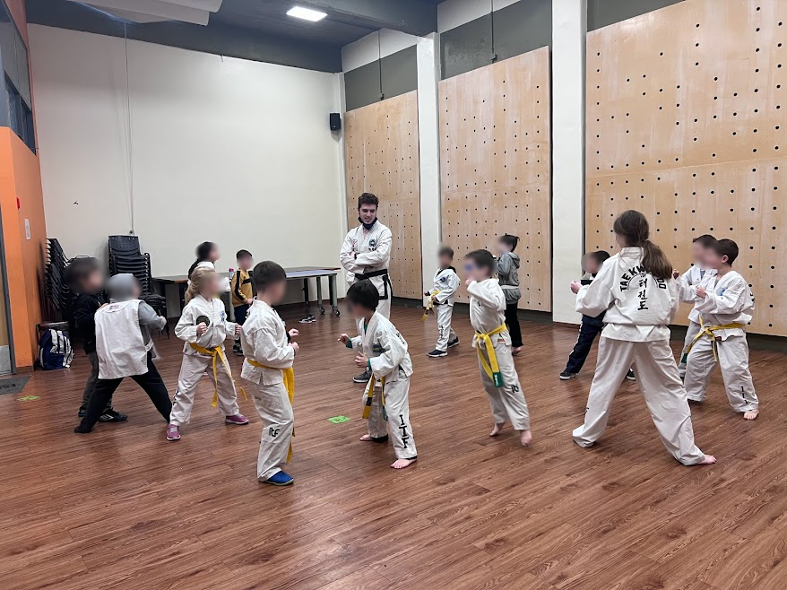

Acerca de la actividad
Proponemos una educación de forma activa, en la cual el alumno adquiera los conocimientos (físicos y formativos) respecto del Taekwon-Do de manera tal que el proceso de asimilación de los mismos sea sólido y consistente y entonces, pueda emplear y aplicar estos conocimientos de modo general en su vida diaria.

Principios del Taekwon-Do
CORTESÍA:
La cortesía es una regla no escrita dada por los antiguos maestros de filosofía, como medio de elevación del ser
humano. Mas aún puede ser considerado el criterio esencial que se le requiere a un mortal. Los estudiantes del
Taekwon-Do tienen que intentar poner en práctica la cortesía para construir un carácter noble y también para
entrenarse de manera ordenada.
INTEGRIDAD:
En Taekwon-Do la palabra integridad se refiere a una noción mas amplia que la definición que de esta palabra da
un diccionario cualquiera. Uno tiene que distinguir lo correcto de lo incorrecto y tener conciencia, si es incorrecto
de sentirse culpable.
PERSEVERANCIA:
Hay un antiguo dicho oriental: "La paciencia lleva a la virtud o al mérito".
"Uno puede construir un hogar mas pacífico siendo paciente cien veces".
Ciertamente, la felicidad y la prosperidad parecerían provenir de personas pacientes.
Para lograr algo, uno debe perseverar constantemente.
Confucio dijo "Quien es impaciente en temas triviales fallará en sus logros en asuntos de mucha importancia"
AUTOCONTROL:
Este principio es extremadamente importante tanto dentro como fuera del dojang, en como uno se conduce en
combate libre o en temas personales y privados. Una inhabilidad para vivir y trabajar con plena capacidad también
es una pérdida de autocontrol.
De acuerdo con Lao-Tzu "El mas fuerte es quien gana sobre sí mismo más que sobre cualquier otro”
ESPÍRITU INDOMABLE:
Se manifiesta cuando una persona enfrenta un problema inmenso utilizando su valentía y sin renunciar a sus
principios.
Un estudiante serio del Taekwon-Do debe ser modesto y honesto.
Si este confronta una injusticia, actuará contra el beligerante sin ningún temor o vacilación, con espíritu
indomable, sin tener en cuenta el número de personas que deba enfrentar.